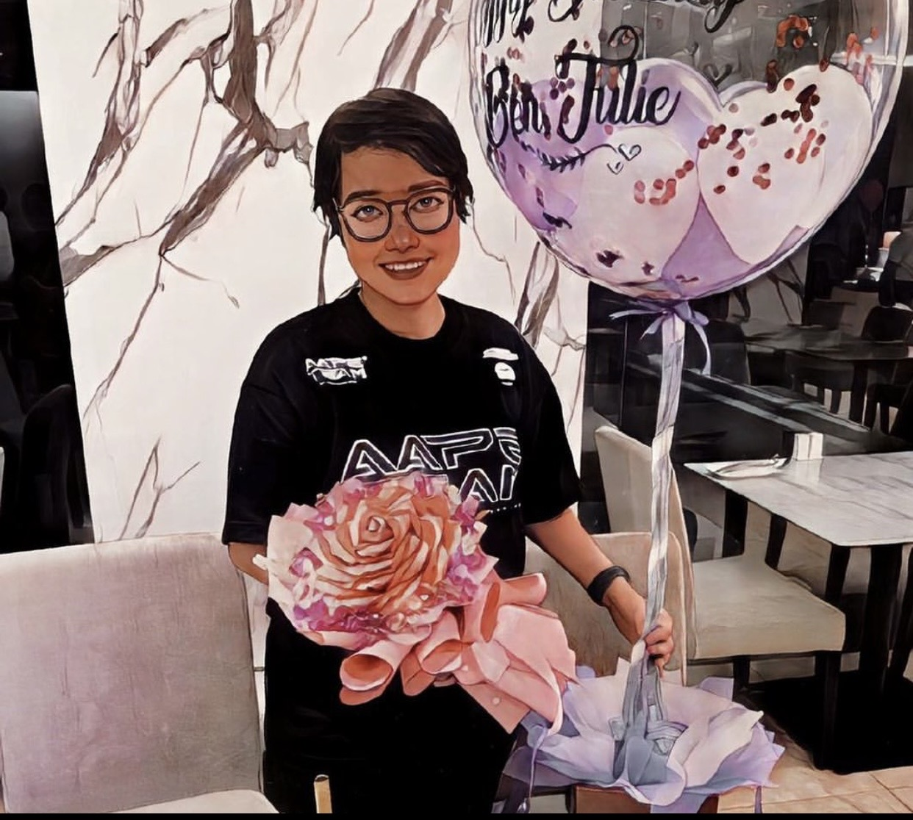

JULIE
! 改变你

Beh Julie
FB : 马茹莉
IG : behjulie827
当谈到马老师的数学教导，无不体现着她对学生的深刻影响。她以她的毅力和坚持，不断地激发学生们对数学的兴趣，让他们逐渐发现数学的美妙之处。无论遇到多大的困难，马老师总是倾心耐心地指导学生，鼓励他们勇敢地面对挑战。她的教学风格不仅仅是传授知识，更是培养学生的思维能力和解决问题的能力，让他们受益终身。马老师的教育故事是一种启示，证明了坚韧和持之以恒的重要性，无论在数学领域还是人生道路上。